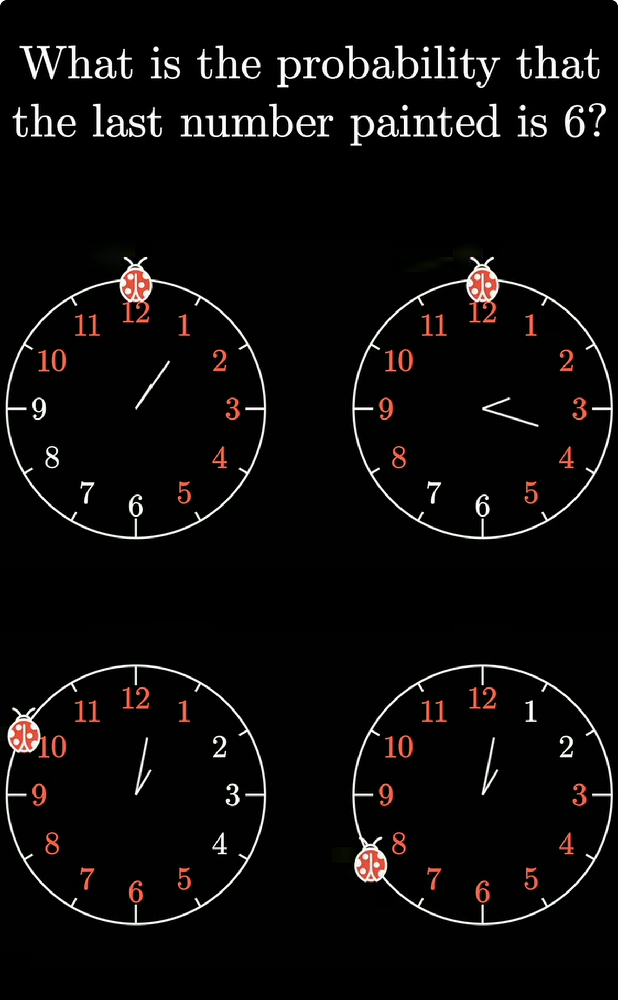

Monthly Mindbenders: The Ladybug's Clock Walk
Challenge your mind with monthly puzzles from Peter Winkler and 3Blue1Brown's Grant Sanderson.

The Series
I've decided to follow along with the MoMath Monthly Mindbenders, a series of puzzles curated by Peter Winkler and shared by Grant Sanderson (of 3Blue1Brown fame). These puzzles are designed to be "mind-bending"—simple to state, but often requiring a clever insight to solve efficiently.
Each month, I'll be attempting to solve these and documenting my thought process here.
The Problem: January 2026
The first puzzle of the year involves a bit of probability and a classic random walk:
A ladybug alights on the 12 of a cuckoo clock. Whenever the clock strikes, she moves randomly to a neighboring number. For example, the first time, she moves to the 1 or the 11 with equal probability.
Suppose the ladybug continues this process until she has been to all of the numbers at least once. What is the probability that the last new number she visits is 6?
My Attempt
Symmetry and Intuition
Let $P(x)$ be the probability that number $x$ is the last new number the ladybug visits.
First, notice the beautiful symmetry of the clock. The problem doesn't change if we flip the clock horizontally. The probability of 1 being the last number visited must be the same as 11. This can be proved trivially as well, but I going to rest my argument here, because I am no longer have to turn up a submission to judge anymore xD
$$P(x) = P(12-x)$$
So, $P(1) = P(11)$, $P(2) = P(10)$, and so on.
Connecting other pieces
Now, let's look at the random walk itself. When the ladybug is at 12, her first step is equally likely to be 11 or 1. This implies a powerful property: the probability of any event occurring from 12 is the average of that event occurring from 11 and from 1.
$$P(6) = \frac{1}{2} P(6 \mid \text{first step to } 11) + \frac{1}{2} P(6 \mid \text{first step to } 1)$$
Now let's dig into the first bit $P(6 \mid \text{first step to } 11)$
This becomes that we start at 11, but the last number we visit is 6. This situation is rotationally equivalent to $P(7)$
$$P(6 \mid \text{first step to } 11) = P(7)$$
Similarly,
$$P(6 \mid \text{first step to } 1) = P(5)$$
$$ => P(6) = \frac{P(7) + P(5)}{2}$$
We saw earlier, $P(7) = P(5)$
$$ => P(6) = P(5)$$
If we extend this,
$$P(1) = P(2) = .... = P(11)$$
Thus, the probability is simply:
$$\mathbf{\frac{1}{11}}$$
It turns out 6 isn't special at all. Every number, except the start, has an equal shot at being the last one standing.